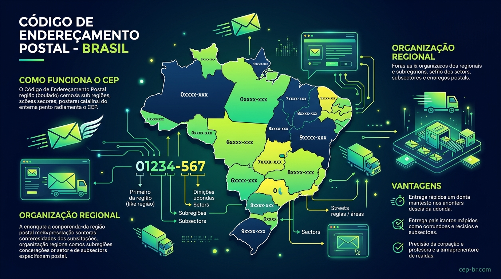
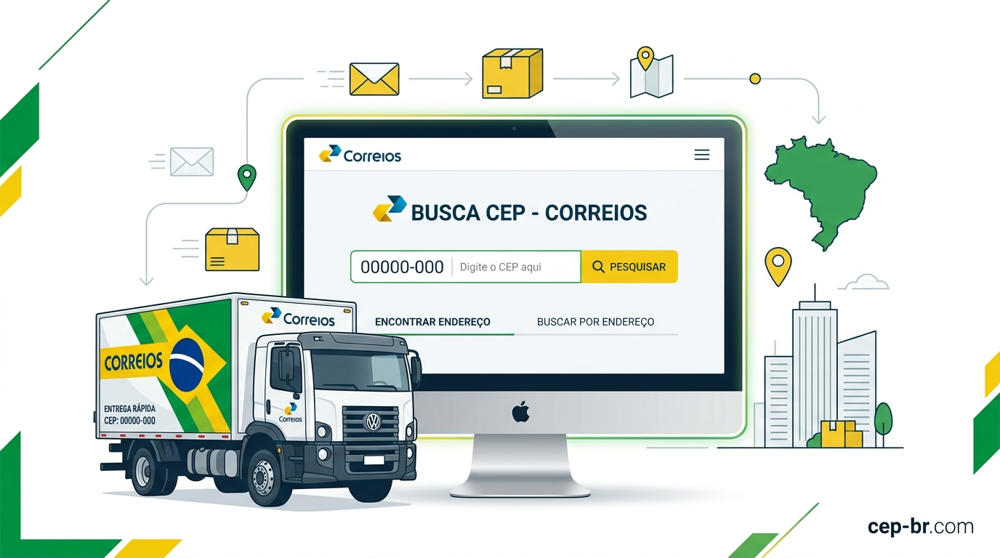
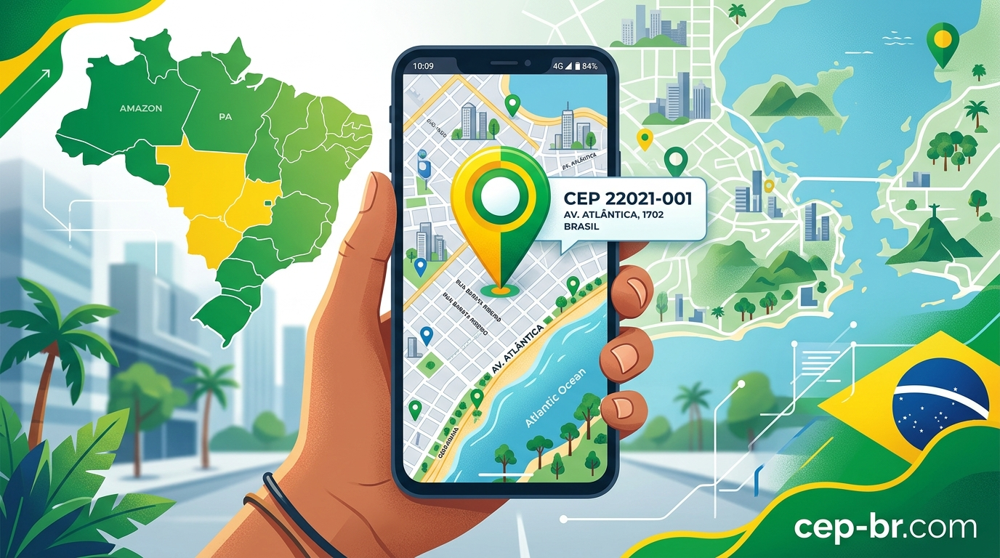
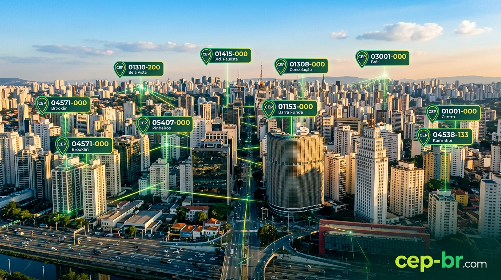

O que e CEP?
O CEP, sigla para Codigo de Enderecamento Postal, e um sistema numerico criado pelos Correios do Brasil para organizar e identificar os enderecos em todo o territorio nacional. Ele e composto por oito digitos no formato NNNNN-NNN, onde os primeiros cinco numeros identificam a grande regiao, a cidade e o setor, enquanto os tres ultimos identificam o logradouro especifico.
Desde sua criacao em 1972, o CEP se tornou um elemento essencial na vida dos brasileiros. Seja para receber correspondencias, fazer compras online, agendar entregas ou simplesmente confirmar um endereco, o CEP esta presente em praticamente todas as transacoes que envolvem localizacao geografica no Brasil.

Figura 1 - Mapa do Brasil com as zonas de Codigo de Enderecamento Postal | cep-br.com
Voce sabia? O Brasil possui mais de 1,5 milhao de CEPs cadastrados, cobrindo desde grandes metropoles como Sao Paulo e Rio de Janeiro ate pequenos municipios e comunidades rurais.
O sistema de CEP foi desenvolvido para agilizar a triagem e a distribuicao de encomendas e cartas pelos Correios. Antes da sua implementacao, o processo de separacao do correio era feito manualmente, levando dias ou ate semanas para que uma correspondencia chegasse ao destino. Com o CEP, esse processo foi automatizado e se tornou muito mais eficiente.
Hoje, o CEP nao serve apenas para cartas. Ele e utilizado por empresas de logistica, plataformas de e-commerce, aplicativos de mapas, servicos de geolocalizacao e ate pelo governo para organizar dados populacionais. Portanto, entender o CEP e entender um pouco da infraestrutura do Brasil.
Criado em
1972 pelos Correios do Brasil
Formato
8 digitos: NNNNN-NNN
Cobertura
Todo o territorio nacional
Uso Principal
Entregas, e-commerce e cadastros
Como Funciona o CEP
Para entender como o CEP funciona, e importante conhecer a estrutura dos seus oito digitos. Cada grupo de numeros tem um significado especifico e segue uma hierarquia geografica que vai do geral para o particular.
Estrutura dos 8 Digitos
O CEP e dividido em dois blocos: NNNNN-NNN. O primeiro bloco de cinco digitos identifica a regiao, subregiao, setor e subsetor postal. O segundo bloco de tres digitos identifica o sufixo, que e o identificador unico do logradouro.
| Posicao | Digito(s) | O que identifica | Exemplo |
|---|---|---|---|
| 1 | 1 digito | Grande Regiao Postal | 0 = Sao Paulo capital |
| 2 | 1 digito | Sub-regiao | 01 = Centro de SP |
| 3-4 | 2 digitos | Setor Postal | 0131 = Bela Vista |
| 5 | 1 digito | Sub-setor | 01310 = Sub-setor especifico |
| 6-8 | 3 digitos | Sufixo / Logradouro | -200 = Rua especifica |
O primeiro digito do CEP indica a Grande Regiao Postal. O Brasil e dividido em 10 regioes postais, numeradas de 0 a 9. Sao Paulo capital possui CEPs que comecam com 0 e 1. O Rio de Janeiro comeca com 2. O Nordeste comeca com 4, 5 e 6.
Regioes Postais do Brasil
| Digito Inicial | Regiao | Estados Cobertos |
|---|---|---|
| 0 e 1 | Sao Paulo Capital e Grande SP | SP |
| 2 | Rio de Janeiro e Espirito Santo | RJ, ES |
| 3 | Minas Gerais | MG |
| 4 | Bahia e Sergipe | BA, SE |
| 5 | Pernambuco, Alagoas, Paraiba e RN | PE, AL, PB, RN |
| 6 | Ceara, Piaui, Maranhao e Para | CE, PI, MA, PA |
| 7 | Goias, Tocantins, Mato Grosso e Norte | GO, TO, MT, AM |
| 8 | Parana e Santa Catarina | PR, SC |
| 9 | Rio Grande do Sul e Mato Grosso do Sul | RS, MS |
Compreender essa estrutura e fundamental para quem trabalha com logistica, e-commerce ou qualquer area que envolva o envio de produtos pelo Brasil. Ao ver um CEP, um profissional consegue identificar a regiao aproximada do endereco apenas olhando para os primeiros digitos.
Como Buscar CEP
Buscar CEP e uma tarefa simples quando se sabe onde procurar. Existem diversas formas de realizar uma busca de CEP no Brasil, desde ferramentas online gratuitas ate aplicativos para smartphone. A forma mais rapida e confiavel e utilizar ferramentas especializadas como a CEP, que oferece busca instantanea e resultados precisos.

Figura 2 - Busca de CEP com interface moderna e Correios | cep-br.com
Metodos de Busca de CEP
Existem tres formas principais de buscar um CEP: pelo numero do codigo, pelo endereco e pela localizacao atual. Cada metodo tem suas vantagens dependendo da situacao especifica do usuario.
Busca pelo Numero do CEP
Digite os 8 digitos no campo de busca. O sistema retorna o endereco completo: logradouro, bairro, cidade e estado.
Busca pelo Endereco
Informe o nome da rua, avenida ou logradouro, junto com a cidade e o estado. O sistema retorna o CEP correspondente.
Busca pela Localizacao Atual
Use o GPS do seu dispositivo para encontrar automaticamente o CEP da sua localizacao atual.
Busca por Cidade ou Bairro
Pesquise todos os CEPs de uma cidade ou bairro especifico, muito utilizada por empresas de logistica.
Independentemente do metodo escolhido, o resultado de uma busca de CEP sempre inclui informacoes como o logradouro, bairro, municipio, estado e o proprio codigo CEP. Esses dados sao essenciais para qualquer tipo de envio ou cadastro.
Como Encontrar Meu CEP
Uma das pesquisas mais comuns no Brasil e meu CEP ou CEP de minha localizacao. Muitas pessoas precisam saber qual e o CEP do endereco onde moram, mas nao tem essa informacao disponivel. Felizmente, existem varias formas praticas de descobrir isso com facilidade.

Figura 3 - Encontrando o CEP pela localizacao no smartphone | cep-br.com
Maneiras de Descobrir o Seu CEP
A forma mais rapida de saber o CEP da sua casa ou empresa e verificar em algum documento que voce ja recebeu no endereco. Contas de agua, luz, gas e extratos bancarios geralmente exibem o CEP no campo de endereco do destinatario.
- Geolocalizacao pelo smartphone: Acesse uma ferramenta de busca de CEP e permita o acesso a sua localizacao. O sistema identificara automaticamente o CEP da rua onde voce esta.
- Busca pelo endereco: Se voce souber o nome da rua, bairro e cidade, basta digitar essas informacoes para obter o CEP rapidamente.
- Verificar documentos recebidos: Correspondencias, faturas e extratos que chegam a sua casa sempre contem o CEP no endereco do destinatario.
- Perguntar aos vizinhos: Em caso de necessidade, vizinhos que ja residem no bairro ha mais tempo podem informar o CEP da rua.
- Contato com os Correios: A agencia dos Correios mais proxima tambem pode fornecer o CEP do seu endereco pessoalmente.
Dica Rapida: A maioria dos smartphones modernos permite localizar o CEP automaticamente. Basta acessar um site de busca de CEP no navegador e conceder permissao de acesso a localizacao quando solicitado pelo sistema.
E importante lembrar que em algumas ruas mais novas ou em loteamentos recentes, o CEP pode ainda nao estar cadastrado no sistema dos Correios. Nesses casos, o endereco recebe um CEP geral do bairro ou da cidade ate que o cadastro seja regularizado pelos Correios.
CEP dos Correios
Os Correios do Brasil sao a principal fonte oficial de dados de CEP do pais. E a empresa responsavel por cadastrar, manter e atualizar o banco de dados de Codigo de Enderecamento Postal de todo o territorio nacional com precisao e regularidade.
A Empresa Brasileira de Correios e Telegrafos (ECT) mantem um sistema chamado SCOEP, que e alimentado constantemente com novos enderecos, atualizacoes de logradouros e criacao de novos bairros em todo o pais.
Como os Correios Organizam o CEP
Os Correios dividem o Brasil em Centros de Distribuicao e Agencias de Entrega, cada um responsavel por um conjunto especifico de CEPs. Essa organizacao hierarquica garante que uma correspondencia chegue ao destinatario correto sem erros de roteamento.
- Centro de Tratamento de Cartas (CTC): Processa o volume de cartas e separa por CEP destino de forma automatizada.
- Centro de Distribuicao Domiciliar (CDD): Distribui as correspondencias para os carteiros de cada bairro especifico.
- Unidade de Distribuicao (UD): Entrega diretamente nos enderecos residenciais e comerciais do bairro.
CEP Especial dos Correios
Alem dos CEPs convencionais de logradouros, os Correios atribuem CEPs especiais a grandes empresas, orgaos do governo e instituicoes que recebem grandes volumes de correspondencia diariamente.
- CEP de Grande Usuario: Atribuido a empresas que recebem mais de 500 correspondencias por dia.
- CEP de Unidade Operacional: Usado pelas proprias agencias dos Correios em todo o pais.
- CEP de Logradouro: O mais comum, identifica uma rua, avenida ou travessa especifica.
- CEP de Localidade: Usado em areas rurais ou pequenos municipios sem cobertura completa por logradouro.
Como Buscar CEP pelo Endereco
Buscar CEP pelo endereco e uma necessidade muito comum em situacoes do dia a dia. Quando voce precisa preencher um formulario de compra online, cadastrar um endereco de entrega ou enviar um pacote pelos Correios, e fundamental ter o CEP correto para garantir que a entrega chegue ao destino certo.
Voce precisa ter em maos pelo menos o nome do logradouro, o nome da cidade e o estado. Com esses dados, qualquer ferramenta especializada consegue localizar o CEP em questao de segundos com alta precisao e confiabilidade.
Passo a Passo para Buscar CEP pelo Endereco
Selecione o Estado
Escolha o estado onde o endereco esta localizado. Isso limita a busca e torna os resultados mais precisos e relevantes.
Informe a Cidade
Digite o nome completo da cidade. Em caso de cidades com nomes parecidos, verifique se selecionou o estado correto antes de continuar.
Digite o Nome da Rua
Insira o nome do logradouro. Nao precisa ser o nome completo, as ferramentas modernas fazem busca aproximada por similaridade.
Selecione o Resultado Correto
O sistema pode retornar varios resultados. Identifique o correto verificando o bairro ou a complementacao do logradouro.
Uma dica importante ao buscar CEP pelo endereco e evitar abreviacoes no campo de busca. Em vez de digitar R. para rua, prefira escrever o nome completo Rua. Isso aumenta a precisao dos resultados e reduz a possibilidade de erros na busca.
CEP por Cidades Brasileiras
Cada cidade brasileira possui um conjunto de CEPs que cobrem todos os seus logradouros. As grandes metropoles como Sao Paulo e Rio de Janeiro possuem milhares de CEPs diferentes, enquanto cidades menores podem ter apenas alguns poucos codigos postais cadastrados.

Figura 4 - Cidade de Sao Paulo com localizacao de CEPs por bairro | cep-br.com
CEP Sao Paulo
Sao Paulo e a maior cidade do Brasil e possui a maior cobertura de CEPs do pais. Os CEPs paulistanos iniciam com os digitos 0 e 1, sendo que a capital concentra os codigos de 01000-000 a 09999-999 em suas diversas subprefeituras.
- Centro Historico: CEPs iniciados em 01xxx
- Bela Vista e Consolacao: CEPs no intervalo 01300-000 a 01399-999
- Pinheiros: CEPs no intervalo 05400-000 a 05499-999
- Itaim Bibi: CEPs no intervalo 04530-000 a 04590-999
- Zona Sul: CEPs iniciados em 04xxx e 05xxx
CEP Rio de Janeiro
O Rio de Janeiro e a segunda maior cidade do Brasil em termos de volume de CEPs. Os CEPs cariocas iniciam com o digito 2, concentrando os codigos de 20000-000 a 23999-999 nos seus bairros mais famosos.
- Centro do Rio: CEPs no intervalo 20000-000 a 20999-999
- Copacabana: CEPs no intervalo 22010-000 a 22081-999
- Ipanema: CEPs no intervalo 22410-000 a 22451-999
- Barra da Tijuca: CEPs no intervalo 22600-000 a 22799-999
Outras Capitais Brasileiras
| Cidade | Estado | Intervalo de CEP |
|---|---|---|
| Belo Horizonte | MG | 30000-000 a 31999-999 |
| Salvador | BA | 40000-000 a 41999-999 |
| Fortaleza | CE | 60000-000 a 60999-999 |
| Curitiba | PR | 80000-000 a 82999-999 |
| Manaus | AM | 69000-000 a 69299-999 |
| Recife | PE | 50000-000 a 54999-999 |
| Porto Alegre | RS | 90000-000 a 91999-999 |
| Brasilia | DF | 70000-000 a 72999-999 |
Tipos de CEP no Brasil
Embora todos os CEPs tenham o mesmo formato de oito digitos, existem diferentes tipos de CEPs no Brasil, cada um com uma finalidade especifica que atende diferentes necessidades do sistema postal nacional.
CEP de Logradouro
E o tipo mais comum. Corresponde a um logradouro especifico: uma rua, avenida, travessa, alameda, praca ou outro tipo de via publica. Cada rua com nome proprio e delimitada geograficamente recebe um CEP exclusivo pelos Correios.
CEP de Grande Usuario
Atribuido a empresas, entidades ou orgaos que recebem um volume muito grande de correspondencias por dia. Shoppings, universidades, grandes empresas e reparticoes publicas costumam ter seus proprios CEPs exclusivos atribuidos pelos Correios.
CEP Comunitario
Criado para comunidades, condominios fechados, conjuntos habitacionais ou localidades que tem uma identidade geografica propria mas nao possuem logradouros publicos individualizados com nomes registrados oficialmente.
CEP de Localidade
Usado em pequenas cidades, vilas ou distritos que nao tem volume de correspondencia suficiente para justificar a criacao de CEPs individuais por rua. Toda a localidade e coberta por um unico CEP geral.
CEP Rural
Atribuido a zonas rurais, fazendas, assentamentos e comunidades que estao fora do perimetro urbano. Em muitos casos, o CEP rural cobre uma area geografica extensa com poucos moradores dispersos no territorio.
Importante: Quando um endereco nao possui CEP de logradouro, o sistema utiliza o CEP da localidade ou do bairro como substituto. Isso e comum em enderecos novos ou em reformas urbanisticas recentes.
Como Consultar CEP Online
A consulta de CEP online e a forma mais pratica e rapida de obter informacoes de enderecamento postal no Brasil. Atualmente, existem diversas plataformas e servicos digitais que oferecem essa funcionalidade de forma gratuita, com resultados precisos e sempre atualizados.
As ferramentas de consulta de CEP online geralmente oferecem duas modalidades de busca: por codigo e por endereco. Na busca por codigo, voce digita os oito digitos do CEP e obtem o endereco completo. Na busca por endereco, voce informa a rua, cidade e estado para descobrir o CEP.
Vantagens da Consulta Online
- Acesso 24 horas por dia, 7 dias por semana, inclusive fins de semana e feriados.
- Resultados instantaneos em fracoes de segundo sem necessidade de espera.
- Banco de dados atualizado regularmente com novas informacoes dos Correios.
- Gratuito e acessivel de qualquer dispositivo com conexao a internet.
- Disponivel em versoes otimizadas para desktop e dispositivos moveis.
- Integracao com mapas para visualizacao geografica do endereco consultado.
- API disponivel para desenvolvedores integrarem a busca em seus sistemas.
Consulta via API de CEP
Para desenvolvedores e empresas, a consulta de CEP pode ser feita de forma programatica por meio de APIs publicas e privadas. Essas interfaces permitem integrar a busca de CEP diretamente em sistemas de e-commerce, ERP, aplicativos moveis e plataformas logisticas de forma automatizada.
As APIs de CEP geralmente retornam os dados em formato JSON, incluindo campos como logradouro, complemento, bairro, localidade, UF, IBGE e DDD. Algumas APIs tambem oferecem dados de geolocalizacao, fornecendo latitude e longitude do endereco consultado com precisao.
CEP em Aplicativos e E-commerce
O CEP tem um papel fundamental no funcionamento do e-commerce brasileiro. Ele e a peca central que conecta o cliente ao sistema de entrega. Ao inserir o CEP na etapa de checkout de uma loja virtual, o sistema automaticamente calcula o prazo de entrega e o valor do frete para aquela regiao geografica.
Como o CEP e Usado no E-commerce
Quando voce acessa uma loja online e digita seu CEP, varias coisas acontecem em segundo plano. O sistema consulta o banco de dados postal para verificar se o CEP e valido, identifica a regiao geografica e apresenta as opcoes de frete com seus respectivos prazos e valores de entrega.
- Calculo de frete: O CEP determina a distancia entre o estoque e o destino, calculando o custo do envio.
- Prazo de entrega: Baseado no CEP, o sistema estima quantos dias uteis a entrega levara para chegar.
- Disponibilidade regional: Algumas lojas usam o CEP para verificar se entregam naquela area especifica.
- Preenchimento automatico: Ao digitar o CEP, o formulario de endereco preenche automaticamente os campos de rua, bairro, cidade e estado.
CEP em Aplicativos de Entrega
Aplicativos de entrega de comida, mercadorias e servicos como iFood, Rappi, Mercado Livre e Amazon tambem dependem do CEP para funcionar corretamente. O aplicativo usa o CEP para localizar os estabelecimentos parceiros proximos ao usuario e calcular o tempo de entrega em tempo real com precisao.
Integracao com Mapas
O CEP tambem e amplamente integrado com servicos de mapas como Google Maps, Apple Maps e Waze. Ao digitar um CEP nesses aplicativos, eles exibem a area correspondente no mapa, facilitando a navegacao e a identificacao de pontos de referencia proximos ao endereco buscado.
Erros Comuns ao Usar CEP
Apesar de ser um sistema simples, o uso incorreto do CEP pode causar problemas serios em entregas e cadastros. Conhecer os erros mais comuns ajuda a evita-los e garante que suas correspondencias e encomendas cheguem ao destino correto sem atrasos desnecessarios.
CEP Digitado Incorretamente
O erro mais frequente e a digitacao incorreta de um ou mais digitos. Como o CEP tem oito numeros, a troca de apenas um digito pode direcionar uma entrega para outro bairro ou ate outra cidade. Sempre verifique o CEP antes de finalizar um pedido ou envio.
CEP Desatualizado
Os Correios atualizam constantemente o banco de dados de CEPs. Ruas que mudam de nome, novos loteamentos e reformas urbanisticas podem alterar ou criar novos CEPs. Se voce usar um CEP antigo, a encomenda pode ser devolvida ao remetente por nao encontrar o destino.
Confusao entre CEP e Numero de Rastreamento
Alguns usuarios confundem o CEP com o codigo de rastreamento dos Correios. O CEP e o codigo do endereco postal, enquanto o codigo de rastreamento e o numero unico atribuido a cada objeto postal para monitorar seu percurso ate o destino final.
Uso de CEP de Localidade em Vez de Logradouro
Em cidades menores, pode haver dois tipos de CEP: o da localidade que cobre a cidade inteira e o de logradouros especificos. Usar o CEP generico da cidade quando existe um CEP especifico para a rua pode causar atrasos significativos na entrega da correspondencia.
Formatacao Incorreta
O CEP deve ser sempre formatado como NNNNN-NNN com hifen separando o quinto e o sexto digitos. Alguns sistemas aceitam o CEP sem hifen, mas e sempre recomendavel usar o formato padrao para evitar erros de processamento nos sistemas dos Correios.
Boa Pratica: Sempre valide o CEP digitado usando uma ferramenta de busca antes de confirmar um pedido ou envio. Isso evita atrasos e reentregas desnecessarias que geram custo adicional para o remetente.
Conclusao
O CEP e muito mais do que uma sequencia de numeros. E o sistema que organiza e viabiliza a distribuicao postal e logistica em um pais continental como o Brasil. Desde sua criacao em 1972, ele evoluiu de uma ferramenta exclusiva dos Correios para um elemento fundamental do e-commerce, da logistica, da tecnologia e do cotidiano de todos os brasileiros.
Saber como buscar, consultar e utilizar corretamente o CEP e uma habilidade essencial para qualquer pessoa que compra ou vende online, envia ou recebe correspondencias, ou simplesmente precisa confirmar um endereco de forma rapida e precisa em qualquer situacao do dia a dia.
O Brasil conta com mais de 1,5 milhao de CEPs ativos, cada um representando um logradouro especifico em um dos 5.570 municipios brasileiros. Esse sistema e mantido e atualizado constantemente pelos Correios, garantindo que o banco de dados reflita as mudancas constantes na malha urbana de todo o territorio nacional.
Esperamos que este guia completo tenha esclarecido todas as suas duvidas sobre o Codigo de Enderecamento Postal. Se voce precisar consultar um CEP a qualquer momento, utilize ferramentas especializadas e confiaveis para garantir a precisao total das informacoes de enderecamento.
Referencias e Parceiros
Confira tambem outras paginas com informacoes uteis sobre CEP e enderecamento postal no Brasil: